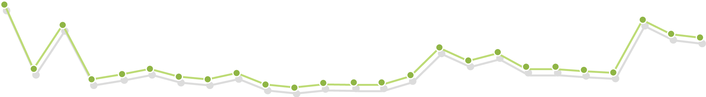

大数据的分析是高门槛、低安全性、结果高延迟、高复杂度的，这意味着：Notebook分析工具提供了一套行之有效的解决方案：
- 往往需要数据处理专家或程序员编写专门的程序去集群上跑作业；
- 连接到集群主机意味着严重的安全隐患；
- 作业的执行时间取决于复杂程度，高延迟的结果返回会降低效率；
Notebook分析工具面向的使用人群：程序员、数据处理专家、数据分析师、研究人员
- 交互指导式的多分析语言(
Hive、Pig、Spark SQL)在线编写执行；- 多权限控制安全，拒绝后门访问；
- 多任务并行执行模式，有效提高分析效率；
Notebook分析工具可以对分析结果进行二次提炼和加工，以最适合用户使用的方式呈现出来
- 当结果数据可以图形化展示时，系统会对分析结果进行提炼，并以柱状图、线性图等方式展示
- 结果数据的标准表格化展现
- 结果数据的系统外格式化导出扩展
Notebook分析工具通过对分析结果和分析程序的建立、保存和积累，逐渐形成一套完善大数据智能分析库：
- 分析程序、分析结果可以保存，达到积累知识财富、提高分析效率的目的
- 分析程序、分析结果可以分享，交流与再次分析
可以支持并行数据分析处理、支持多种分析语言的大数据分析工具&平台
